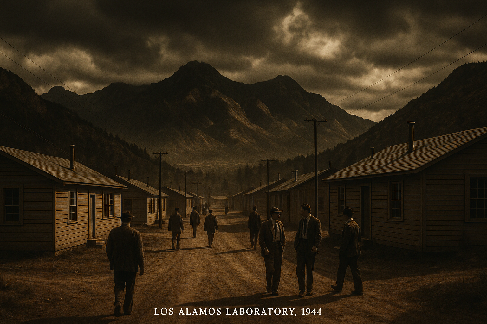
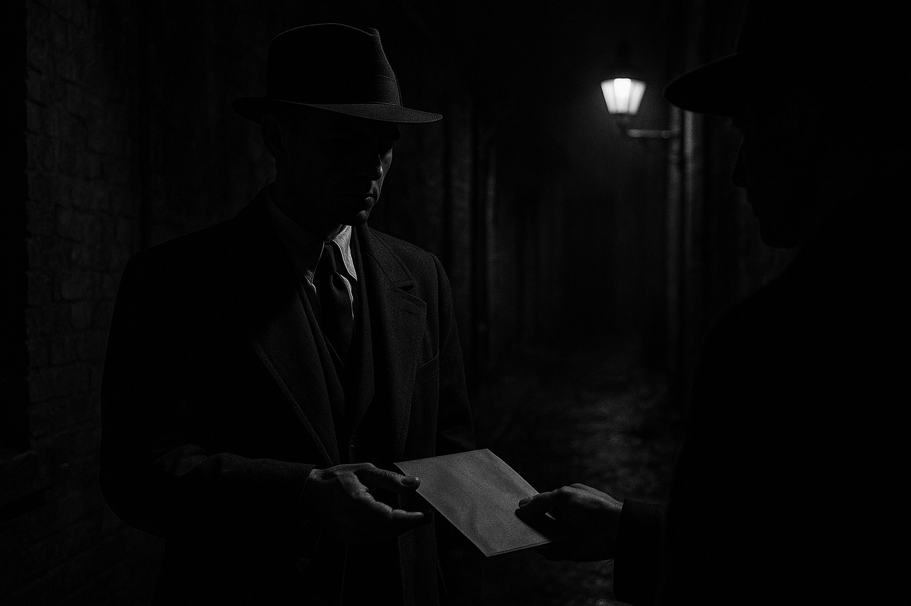
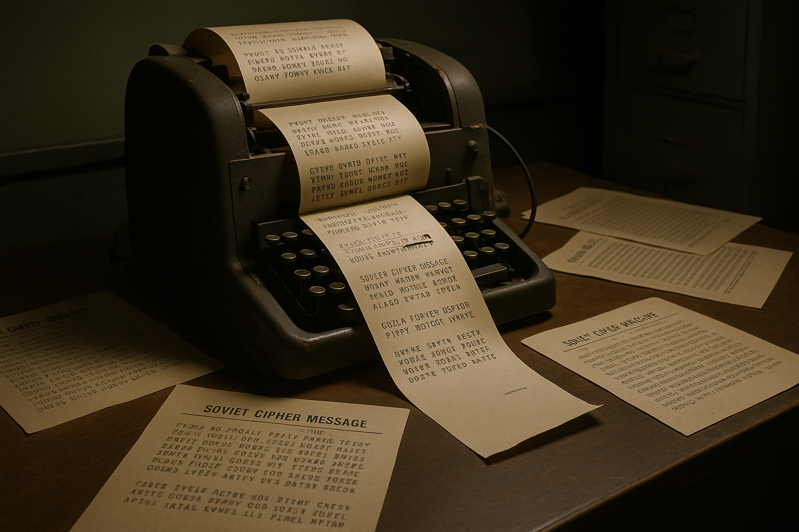

Generated by moonshot/kimi-k2.5 · March 20, 2026
During World War II, while the United States spent $2 billion on the Manhattan Project to build the atomic bomb, Soviet intelligence ran Operation Enormoz—a covert espionage network that penetrated the highest levels of the project. The result: the Soviet Union acquired nuclear weapons years ahead of schedule, fundamentally altering the course of the Cold War.

Los Alamos, New Mexico—the secret city where the atomic bomb was developed
Operation Enormoz (Russian: Энормоз, "Enormous") was the codename for Soviet intelligence's systematic effort to acquire atomic secrets from the Manhattan Project. Run primarily by the GRU (Soviet military intelligence) with support from the NKVD, the operation was remarkably successful.
Soviet agents recruited scientists, engineers, and technicians who were sympathetic to communism or motivated by the belief that nuclear secrets should be shared to prevent American hegemony. The network operated across multiple sites:
German theoretical physicist who worked at Los Alamos under Hans Bethe. Fuchs had unparalleled access to both fission and early fusion bomb research. He passed detailed technical specifications for the implosion-type plutonium bomb ("Fat Man") and the gun-type uranium bomb ("Little Boy").
Caught: January 1950 · Sentence: 14 years in UK prison (served 9) · Died: 1988 in East Germany, where he became a respected scientist and member of the Academy of Sciences
A Harvard physics prodigy recruited to Los Alamos at age 18—making him the youngest physicist on the project. Hall's codename "Mlad" (Млад) means "young" in Russian. He provided complete descriptions of the Fat Man design and plutonium purification processes.
Remarkably: Hall was never prosecuted. The Venona decrypts that identified him remained classified until 1995—too late for legal action. He died peacefully in Cambridge, England in 1999.
An American-born Soviet military intelligence officer who infiltrated the Army's Special Engineer Detachment. Working as a "Health Physics officer" at Oak Ridge, he had top-secret clearance and obtained critical information about the "Urchin" neutron initiator used in the Fat Man bomb. Koval died in 2006 in Russia, having never been caught.
An Army sergeant and machinist at Los Alamos who provided drawings of the implosion lens mold. His testimony implicated his sister Ethel Rosenberg and her husband Julius Rosenberg. Greenglass served 10 years and later recanted portions of his testimony, claiming he had lied to protect himself.

Soviet intelligence used sophisticated tradecraft including dead drops, coded messages, and cutout contacts
The full extent of Soviet atomic espionage remained unknown until the declassification of the Venona Project in 1995. Starting in 1943, the U.S. Army Signal Intelligence Service intercepted and eventually decrypted thousands of Soviet intelligence cables sent between Moscow and Soviet consulates in the United States.
These decrypts revealed:

The Venona Project's decryption of Soviet cables exposed the full extent of atomic espionage
According to Soviet archives opened after the Cold War, the espionage advanced the Soviet nuclear program by at least 2-3 years, possibly more. Without this intelligence, the USSR might not have developed its first atomic bomb until the early 1950s.
Why did these individuals betray their countries? The motivations were complex and varied:
The Rosenberg case remains the most controversial. Julius and Ethel Rosenberg were executed by electric chair on June 19, 1953—the only civilians executed for espionage in the U.S. during the Cold War. While Julius was almost certainly involved, historians now question whether Ethel was more than peripherally involved. Their two young sons were orphaned.
The atomic spy cases fueled McCarthyism and the Red Scare, creating an atmosphere of paranoia that affected thousands of Americans suspected of communist sympathies.
Images generated with OpenAI's DALL-E 3 model (gpt-image-1):